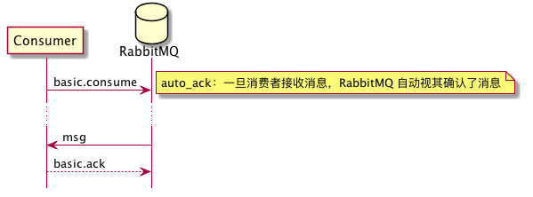

RabbitMQ
Table of Contents
| Author | Hao Ruan (haoru@cisco.com) |
| Date | 2018-01-27 16:46:03 |
Table of Contents
1 消息标签
- AMQP 用标签表述消息，由一个交换器名称和可选的主题标记组成。
- 在消息的路由过程中，消息的标签并没有随 payload 一起传递，如果需要明确知道是谁生产的 AMQP 消息的话，就要看生产者是否把发送方信息放入 payload 中。
2 消息
- 当队列拥有多个消费者，队列收到的消息将以循环的方式发送给消费者，每条消息只会发送给一个订阅的消费者。
- 消费者接收到的每条消息都必须进行确认。
- 在上一条消息确认之前，RabbitMQ 会认为这个消费者并没有准备好接收下一条消息，因此不会再给该消费者发送更多消息。
- 如果消费者收到一条消息，在确认之前断开了连接（或者从队列上取消订阅），RabbitMQ 会认为这条消息没有分发，然后重新分发给下一个订阅的消费者。
2.1 订阅消息

2.2 获取消息

basic.get命令会订阅消息，获得单条消息，然后取消订阅，因此效率不高。
2.3 拒绝消息

requeue=false 的意义在于：RabbitMQ 会支持一个特殊的队列（dead letter）用来存放那些被拒绝而不重入队列的消息。
dead letter 队列可以让管理者通过检测拒绝或未送达的消息来发现问题所在。
因此，如果想使用 dead letter 队列功能的话，需要使用 reject 命令，并将其设为 false 。
2.4 创建队列

- 消费者和生产者都能使用
queue.delare命令来创建队列。 - 如果消费者在同一信道上已订阅了另一个信道的话，则无法再声明队列了，必须先取消订阅。
- 当创建队列时，可以指定队列名称，如果不指定的话，RabbitMQ 会分配一个随机名称并在
queue.declare命令的响应中返回。 - 如果需要临时队列只为一个消费者服务的话，可以结合使用
auto-delete和exclusive，当消费者断开连接时，队列就被移除了。 - 发出去的消息如果路由到了不存在的队列的话，RabbitMQ 会忽略它们。因此，一般情况下，生产者和消费者都应该尝试创建队列。
3 交换器
3.1 direct
如果路由键匹配的话，消息就被投递到对应的队列。
RabbitMq 会默认实现一个类型为 direct 的，名称为空白字符串的交换器。
当声明一个队列时，一开始该队列会自动绑定到默认交换器， 并以队列名称作为路由键 。
之后可以发送 exchange.declare 命令并设置合适的参数，就可以升级成具体类型交换器。

3.2 fanout
将收到的消息广播的绑定的队列上。

3.3 topic

.把路由键分为了几部分*匹配特定位置的任意文本#匹配所有规则
4 RabbitMQ 管理
4.1 vhost
- 查看
rabbitmqctl list_vhosts
- 创建
rabbitmqctl add_vhost <vhost_name>
- 删除
rabbitmqctl delete_vhost <vhost_name>
5 Pika
5.1 基本用法
5.1.1 生产者
import pika
EXCHANGE = 'hello-exchange'
conn_params = pika.ConnectionParameters(host='10.74.68.89', port=45672, socket_timeout=3.0)
conn_broker = pika.BlockingConnection(conn_params) # 使用默认 vhost /
channel = conn_broker.channel()
channel.exchange_declare(exchange=EXCHANGE,
exchange_type='direct',
passive=False,
durable=True,
auto_delete=False)
msg_props = pika.BasicProperties()
msg_props.content_type = 'text/plain'
channel.basic_publish(exchange=EXCHANGE,
properties=msg_props,
body='Hello World',
routing_key='hola')
conn_broker.close()
5.1.2 消费者
import pika
EXCHANGE = 'hello-exchange'
QUEUE = 'hello-exchange'
TAG = 'hello-consumer'
conn_params = pika.ConnectionParameters(host='10.74.68.89', port=45672, socket_timeout=3.0)
conn_broker = pika.BlockingConnection(conn_params)
channel = conn_broker.channel()
channel.exchange_declare(exchange=EXCHANGE, # 如果没有就创建，否则继续
exchange_type='direct',
passive=False,
durable=True,
auto_delete=False)
channel.queue_declare(queue=QUEUE)
channel.queue_bind(queue=QUEUE,
exchange=EXCHANGE,
routing_key='hola')
def msg_consumer(channel, method, header, body):
channel.basic_ack(delivery_tag=method.delivery_tag)
print("receive: {}".format(body))
channel.basic_cancel(consumer_tag=TAG)
channel.stop_consuming()
channel.basic_consume(msg_consumer,
queue=QUEUE,
consumer_tag=TAG) # 用于标识进程的消费者标记
print(' [*] Waiting for messages. To exit press CTRL+C')
channel.start_consuming()
5.2 发送方确认模式
信道进入 confirm 模式，所有在信道上发布的消息都会被指派一个唯一的 ID 号（从 1 开始）。 一旦消息被投递给所有匹配队列后，信道会发送一个发送方确认模式给生产者应用程序（包含消息的唯一 ID ）。 这使得生产者知晓信息已经安全到达目的队列了。
5.2.1 生产者
#! /usr/bin/env python3
# -*- coding: utf-8 -*-
import pika
EXCHANGE = 'hello-exchange'
conn_params = pika.ConnectionParameters(host='10.74.68.89', port=45672, socket_timeout=3.0)
conn_broker = pika.BlockingConnection(conn_params) # 使用默认 vhost /
channel = conn_broker.channel()
channel.confirm_delivery()
channel.exchange_declare(exchange=EXCHANGE,
exchange_type='direct',
passive=False,
durable=True,
auto_delete=False)
msg_props = pika.BasicProperties()
msg_props.content_type = 'text/plain'
ack = channel.basic_publish(exchange=EXCHANGE,
properties=msg_props,
body='Hello World',
routing_key='hola')
if ack:
print("confirm received")
else:
print("msg lost")
conn_broker.close()